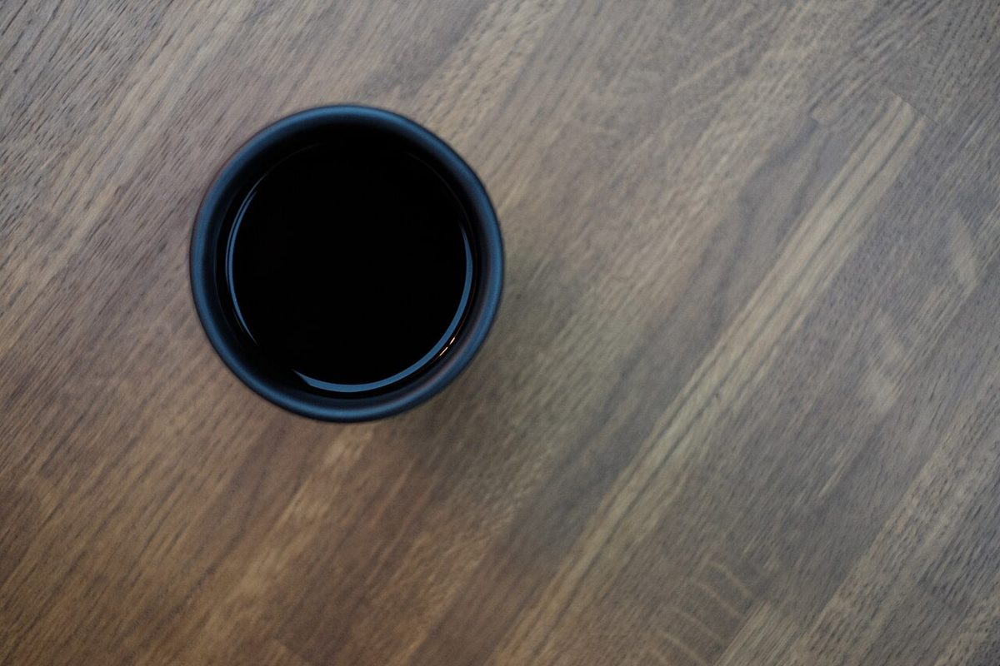
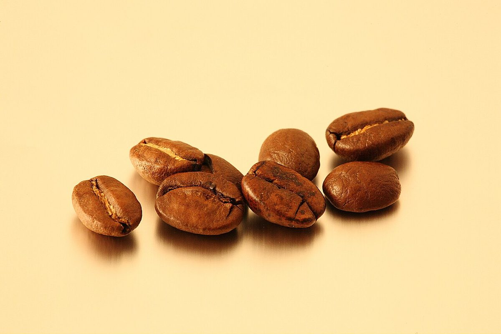
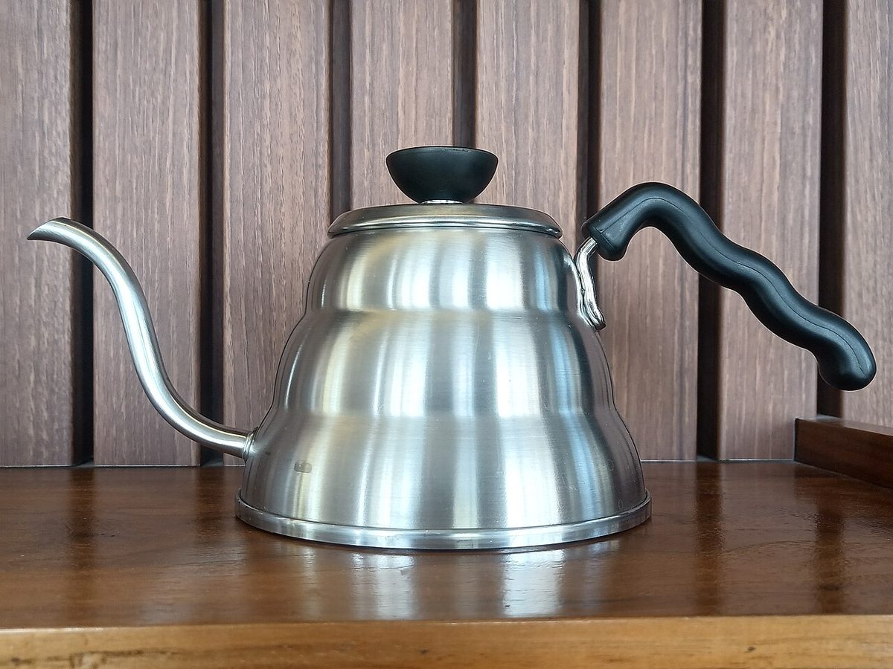

メニュー

メニュー内容
準備中(お問い合わせください)
最新の内容は、お電話またはInstagramでご確認ください。
ご利用前に
料金・提供内容は準備中(お問い合わせください)。


掲載写真はフリー素材のイメージで、店舗の実際の様子ではありません。他地域で撮影されたもの、撮影地が不明なものを含みます。

最新の内容は、お電話またはInstagramでご確認ください。
料金・提供内容は準備中(お問い合わせください)。


掲載写真はフリー素材のイメージで、店舗の実際の様子ではありません。他地域で撮影されたもの、撮影地が不明なものを含みます。